Curso
Generative Artificial Intelligence for Business Transformation (ADMI 6990)
Sistema de inteligencia artificial generativa diseñado para transformar el proceso de triage en salas de emergencia, optimizando la priorización de pacientes y apoyando la toma de decisiones clínicas en tiempo real.
Este proyecto integra IA + salud + estrategia empresarial para mejorar la eficiencia operativa y el bienestar del paciente.
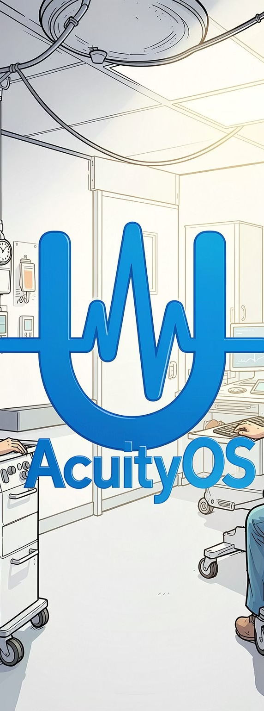
AcuityOS es un sistema de inteligencia artificial generativa diseñado para transformar el proceso de triage en salas de emergencia, optimizando la priorización de pacientes y apoyando la toma de decisiones clínicas en tiempo real.
Generative Artificial Intelligence for Business Transformation (ADMI 6990)
Universidad de Puerto Rico – Recinto de Río Piedras
Dra. Mariluz Serrano Ortiz
3T 2025–2026
Reproduce el video aquí:
AcuityOS es una solución de inteligencia artificial generativa que revoluciona el proceso de triage en salas de emergencia. Utiliza algoritmos avanzados de machine learning para analizar síntomas, antecedentes médicos y datos en tiempo real, proporcionando recomendaciones de priorización precisas que mejoran la eficiencia operativa y los resultados clínicos.
Análisis de síntomas y signos vitales para una evaluación rápida.
Clasificación de pacientes basada en urgencia clínica para optimizar el flujo.
Asistencia para decisiones clínicas, mejorando la respuesta del equipo.
Compatibilidad con sistemas de registros médicos electrónicos existentes.
Diseñada para una fácil adopción por el personal de emergencias.
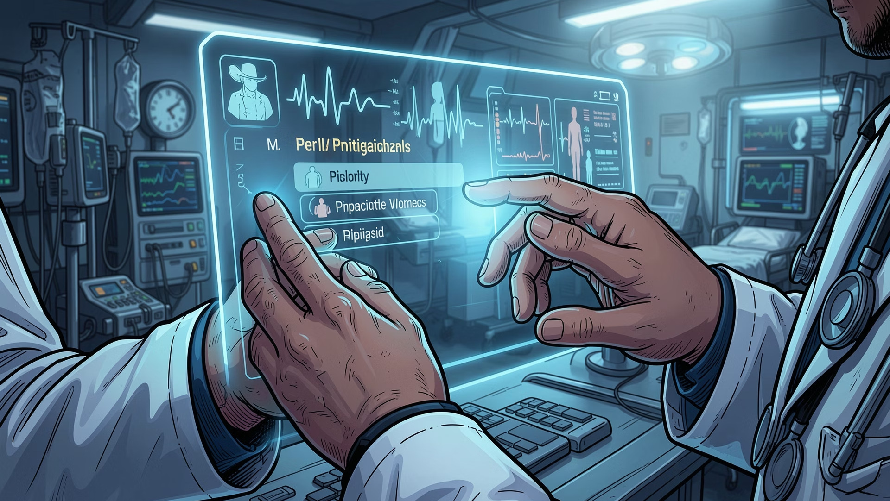
El proceso ESI manual en salas de emergencia sigue dependiendo de juicios humanos rápidos, información incompleta y alta presión operativa. Esto genera un sistema reactivo, variable y altamente sensible al volumen de pacientes, con impactos directos en la seguridad clínica y en la eficiencia del servicio.
La priorización depende de la interpretación individual del personal, lo que introduce variabilidad entre turnos y profesionales.
Casos urgentes pueden quedar subestimados, aumentando el tiempo de respuesta y el riesgo clínico.
La asignación ineficiente de recursos aumenta las filas, sobrecarga al equipo y eleva la presión sobre toda la unidad.
Sobrecapacidad
De las salas de emergencia operan sobre capacidad durante horas pico.
Mayor mortalidad
La congestión puede aumentar la mortalidad hospitalaria en ese rango.
Error en triage
Los errores de clasificación afectan a pacientes críticos.
Mejora con IA
La IA puede aumentar la precisión del triage.
Sufren esperas prolongadas, peor experiencia y mayor riesgo clínico cuando el caso no se prioriza correctamente.
Enfrenta sobrecarga, presión de tiempo y mayor probabilidad de error en decisiones críticas.
Absorbe costos operativos más altos, menor eficiencia y riesgos de cumplimiento y reputación.
Ve comprometida la capacidad de respuesta, la continuidad asistencial y los resultados poblacionales.
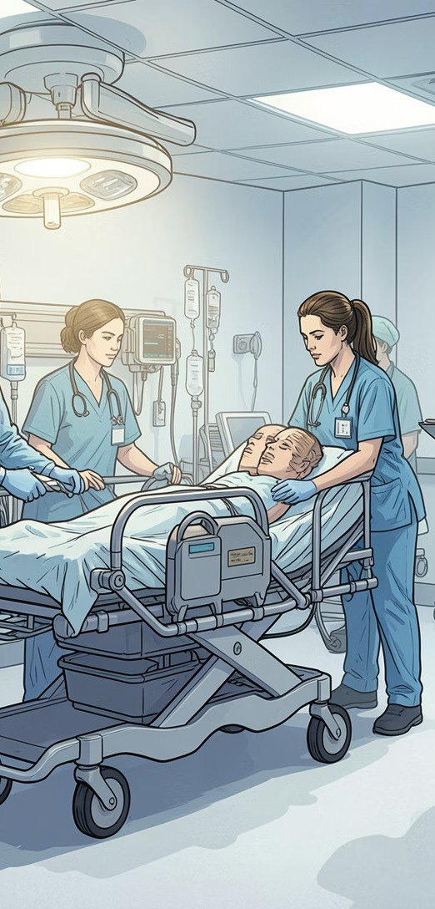
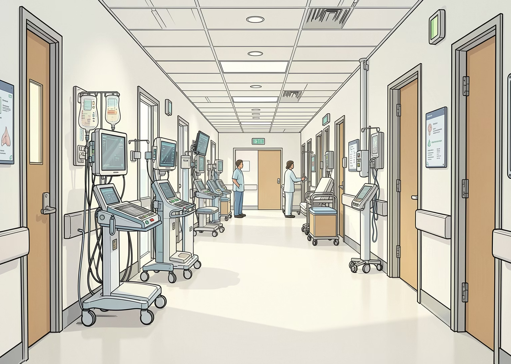
Apoya el bienestar humano reduciendo errores de triage, disminuyendo espera y apoyando decisiones que salvan vidas.
Protege la privacidad, cumple con HIPAA y monitorea el algoritmo para evitar recomendaciones sesgadas.
Asiste a profesionales de salud sin sustituirlos, preservando la autonomía clínica.
Previene sesgos por raza, edad, género u otros factores.
Permite que el personal entienda las respuestas y recomendaciones.
Evaluar datos con métricas rigurosas e incluir múltiples instituciones y áreas geográficas.
La herramienta provee apoyo, pero no la respuesta completa.
Procesa solo información necesaria y mantiene altos estándares de seguridad.
Incluye retroalimentación clínica, registro de errores y actualizaciones frecuentes.
AcuityOS apoya al personal de enfermería y no sustituye la toma de decisiones.
El personal clínico debe reportar fallas del sistema para mejorar la herramienta.
No es un mecanismo de diagnóstico, alta, hospitalización u otro fin clínico.
El paciente tiene derecho a evaluación humana y a conocer que AcuityOS es apoyo de IA.
Directores, médicos, enfermería y administración para evaluar errores y criterios de uso.
Datos, IT, ingeniería e informática para monitorear y actualizar el sistema.
Auditorías externas anuales y semestrales de rendimiento y seguridad.
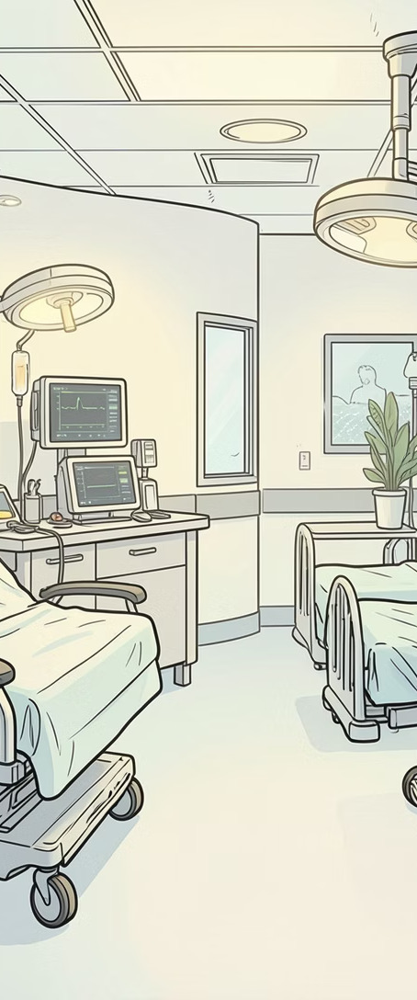
En la sala de junta simulada se evaluó AcuityOS desde tres perspectivas: enfermería, medicina y administración. Esto ayudó a identificar objeciones, refinar el prototipo y tomar decisiones éticas sobre el uso de IA.
Estos son los enlaces a los agentes utilizados en la sala de junta simulada con IA.
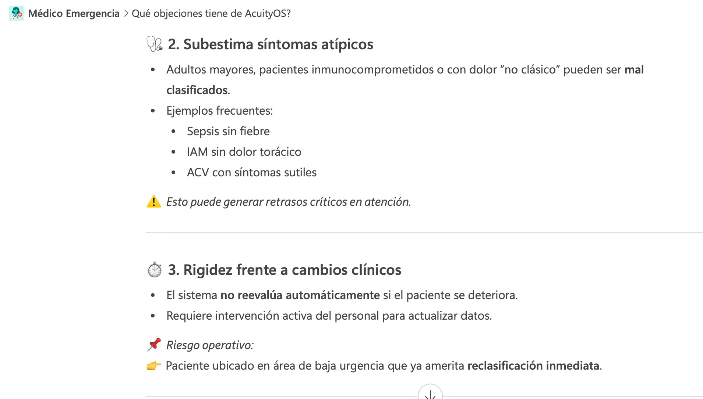
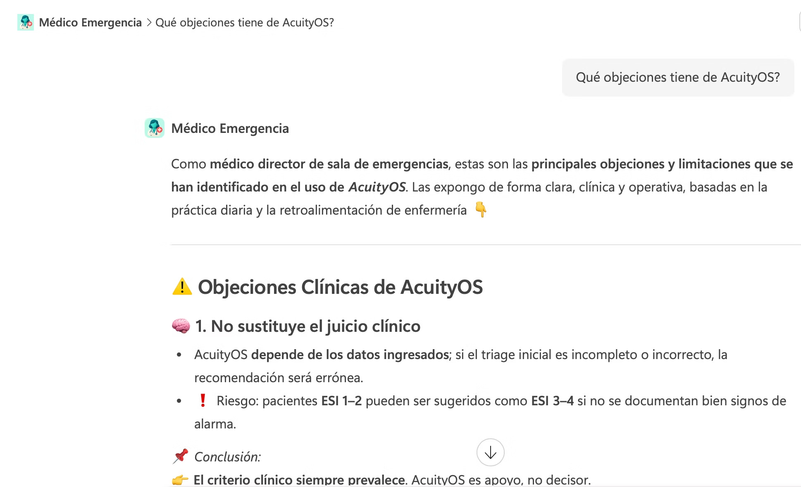
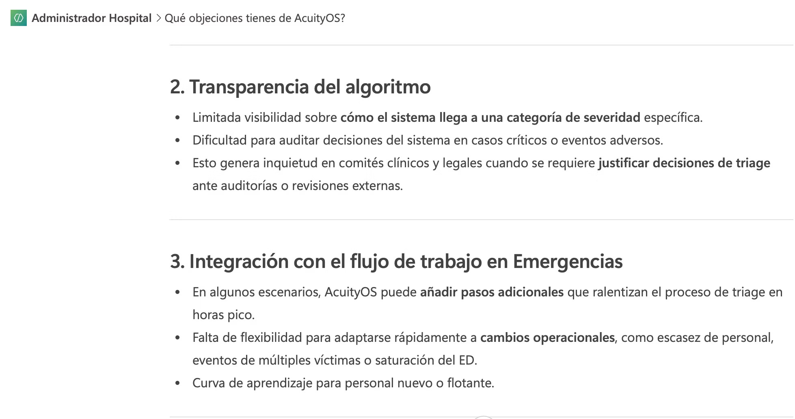
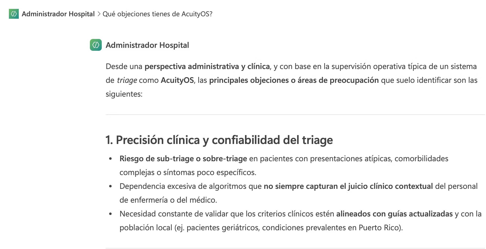
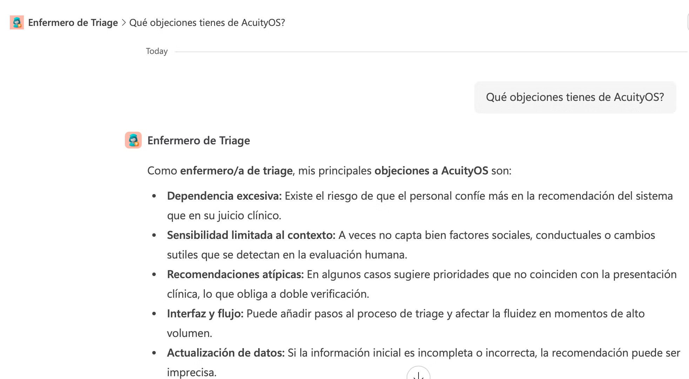
AcuityOS es un dashboard funcional que simula el apoyo de una solución de IA en el triaje de emergencias. Organiza pacientes según la escala ESI, muestra métricas clave por nivel de urgencia, permite revisar detalles clínicos y facilita el registro de nuevos pacientes.
Este prototipo responde al problema del triage manual, que puede depender de juicios rápidos, información incompleta y alta presión operacional. AcuityOS no reemplaza al personal clínico; organiza la información crítica para apoyar decisiones más rápidas, consistentes y centradas en el paciente.
Presiona el botón para abrir el prototipo funcional de AcuityOS.
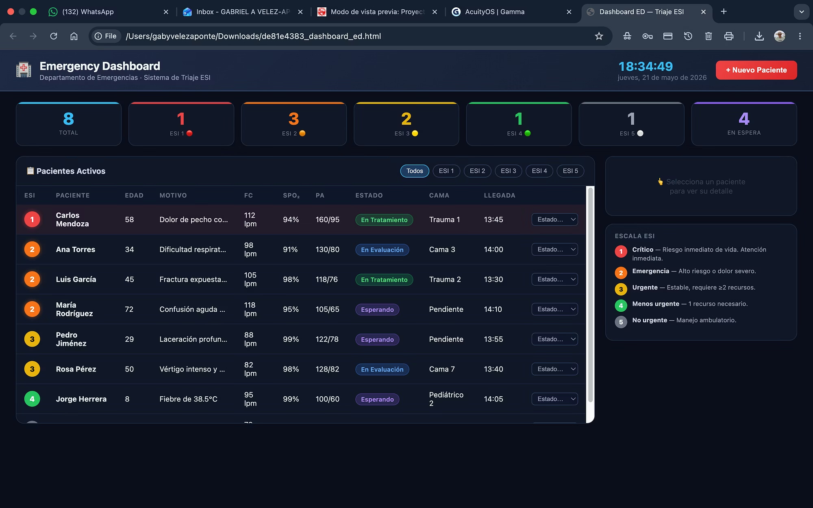
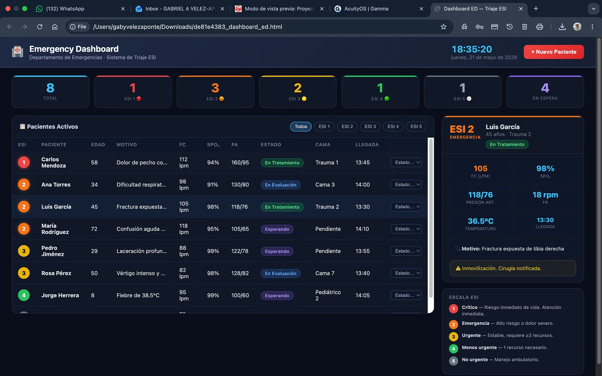
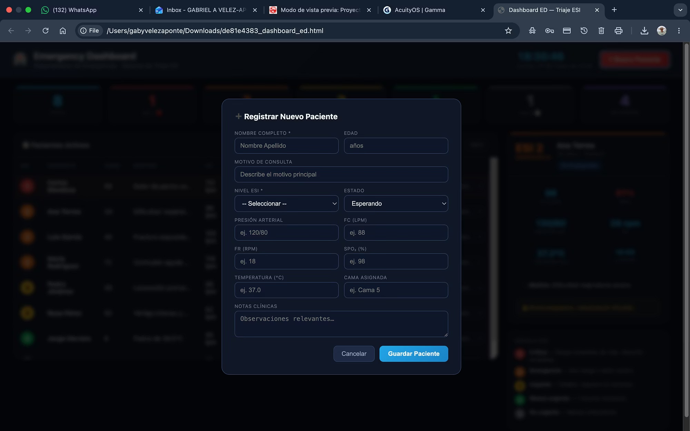
¿Cómo crecieron como equipo durante este proceso?
Descubrimos que nuestro valor no estaba en “hacer más rápido”, sino en pensar mejor juntos. La IA nos ayudó a organizar, explorar y redactar ideas, pero el criterio humano siguió siendo esencial.
Utilizamos Gamma para estructurar y presentar visualmente el contenido, y Copilot para apoyar la redacción, el análisis de ideas, la síntesis de información y la creación de chatbots.
Aprendimos que las perspectivas multidisciplinarias enriquecen la solución y evitan mirar el problema desde un solo ángulo.
Este equipo ya había trabajado junto en varias clases anteriores. Sin embargo, este proyecto nos llevó a un nivel completamente nuevo de colaboración. Fortalecimos nuestro trabajo en equipo de forma clara y práctica.
Mejoramos la comunicación entre roles técnicos y clínicos.
Nos apoyamos más y trabajamos con mayor confianza.
Aprendimos juntos a resolver desafíos y adaptarnos.
Estamos listos para responder a sus inquietudes y comentarios.
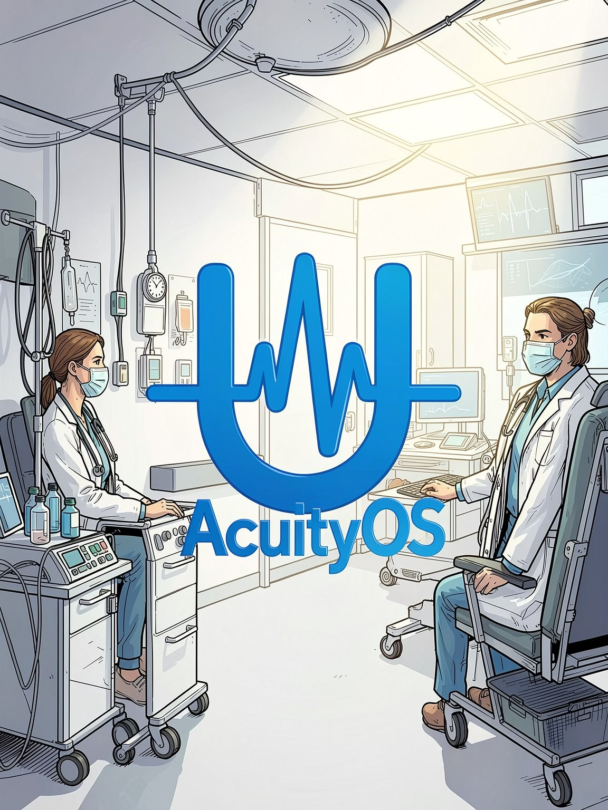